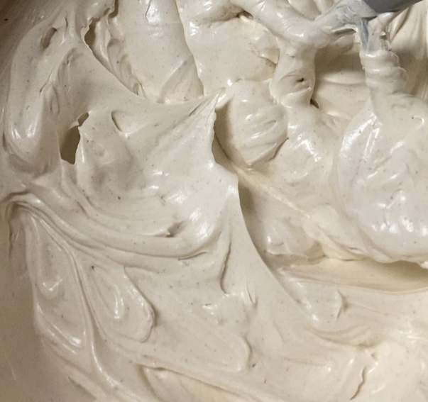

Swiss Meringue Buttercream

Description
I'm really not a frosting person at all, but swiss meringue buttercream is one of the few exceptions. It's just sweet enough to leave you wanting more, and the texture is light and buttery witout feeling greasy. If it's still too sweet for you, adjust the salt for balance. This is my favorite recipe, from @ibakemistakes on tiktok. This recipe assumes you have a stand mixer.
Ingredients
- 200 grams egg whites
- 400 grams granulated sugar
- 550 grams unsalted butter, softened
- 1 vanilla bean, or 2tsp vanilla extract
- salt, to taste
Steps
- Fill a large pot with an inch or two of water and place over medium heat.
- Wash and dry your stand mixer bowl and whisk, then go over it again with a paper towel dampened with vinegar. This will make sure there is no residual fat that can prevent your meringue from inflating.
- Dry your bowl once again, then add your egg whites and sugar. If using a vanilla bean, scrape the seeds in now.
- Once the water is simmering, place your bowl over the pot, scraping constantly with a heat-resistant spatula. Keep an instant-read thermometer nearby.
- Once the mixture has loosened considerably, start checking the temperature with your thermometer. Once it reaches 165F, immediately move the bowl off the heat to your stand mixer.
- Beat on medium high with the whisk attachment until you reach medium/stiff peaks and the sides of the bowl are no longer warm to the touch.
- Turn the mixer to low and add your butter, scraping down if necessary to ensure it's all incorporated. Adding a bit at a time can cut down on the need for scraping.
- Add salt, vanilla extract if using, and any other flavorings, then let whip for about 10-15 minutes.
- Switch to the paddle attachments, then let it go on low for another 10-15 minutes.
- Use immediately, or refrigerate for up to a week.